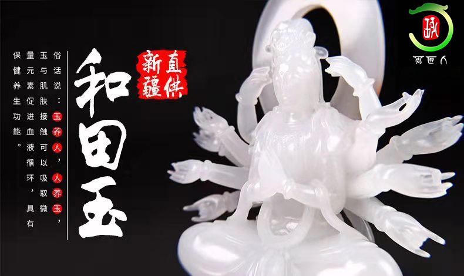
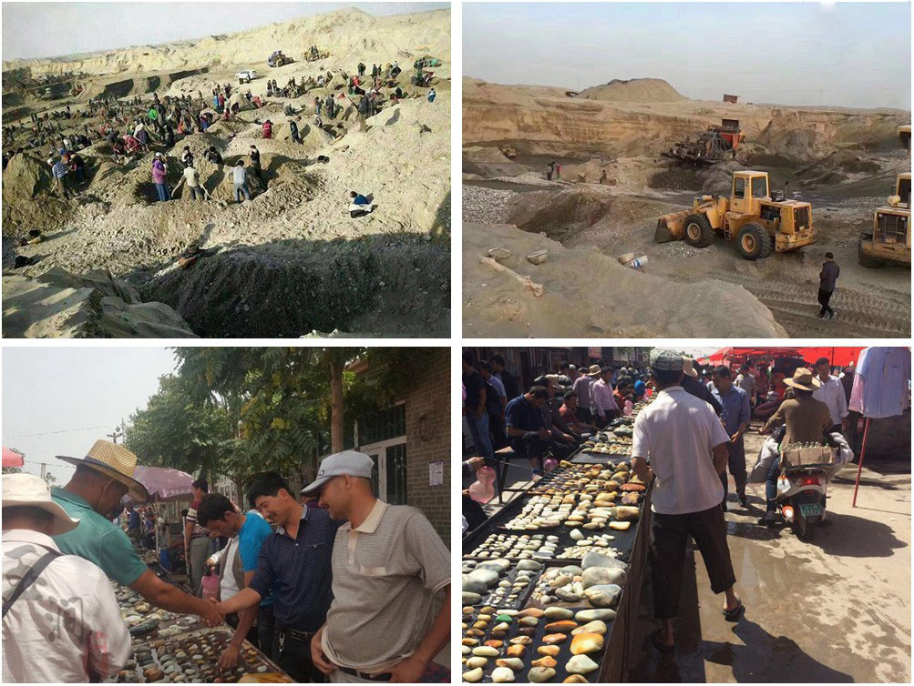
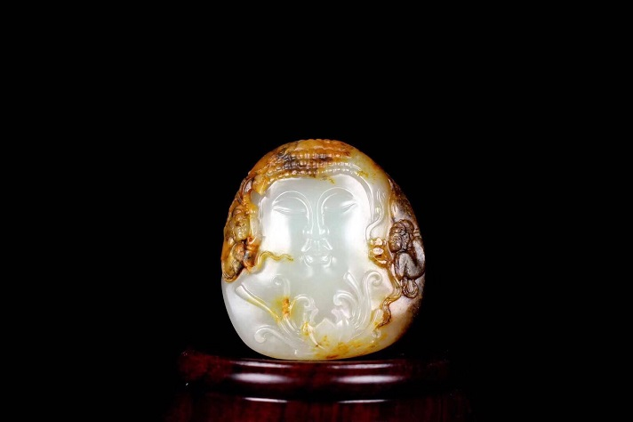

玩和田玉，捂紧钱包，先听听我的心里话
大家好，我是周匠人的掌柜，微信号 ，家中做和田玉有20多年的经验，从小便对和田玉耳濡目染，因此无论您是求鉴定还是想结缘，我都懂您说的，懂您没说的。其实玩和田玉真的很简单，只要您肯学习、钻研，在我的帮助下，您一定能花最少的钱结缘最好的和田美玉，花最少的时间，获得最多的和田玉知识干货。不信，您往下看。

为什么选择我嘞？
从我爸爸那一代起，家中从事和田玉产业已经长达20多年，目前给全国100多家店铺供货，与数十位省级乃至国家级玉雕大师交情颇深。随着圈子的不断扩大，终于在2005年有了自己的电商品牌——周匠人，专营和田玉。一心一意做好玉，是周匠人的宗旨，为的是让更多的朋友通过我们，发现一个精彩绝伦的和田玉世界。加我微信号
一、资源强大：在和田用原料集散地，我们不仅有自己的原料采购加工团，更有自己的玉雕师团队。
二、保真精品：每件作品都会标明材料的来源，证书编号您在线可查证，绝无造假
三、价格便宜：周匠人坚持用价格还原每一块玉石真正的价值，从原料到雕刻加工与抛光，全部工序一体化，一手货源在最大程度上降低成本。每块和田玉从我手里直接到您手中，绝无中间商赚差价。
四、免费顾问：免费鉴别和田玉，加我微信：（长按可复制）
五、优惠活动：微信朋友圈会不定期的推出捡漏活动和节日优惠活动。
六、分享和田玉知识干货：朋友圈会发一些文玩鉴别知识、设计图、加工图、私人订制的成功案例等等，而且有些话并不能在这里公开说，我只会在微信里说明甚至揭穿和田玉造假现象。
如果你还在为如何买到真的好的和田玉而苦恼，欢迎联系我。加我的微信，朋友们也许会问，有什么理由来加我的微信？相信我，这里能解决您面对和田玉最实际的问题。
欢迎加我微信： (长按复制)
